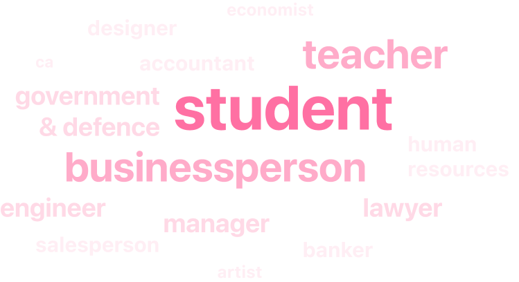
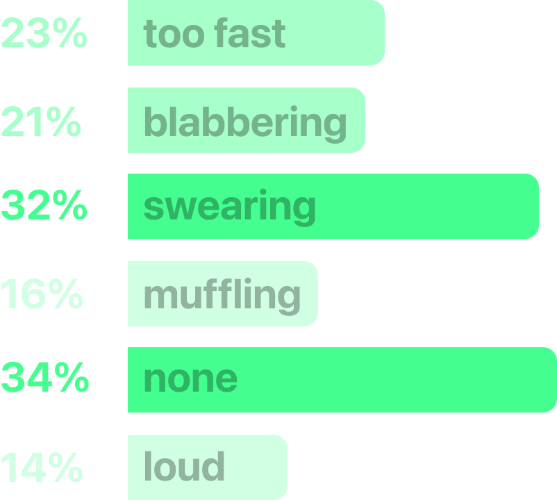
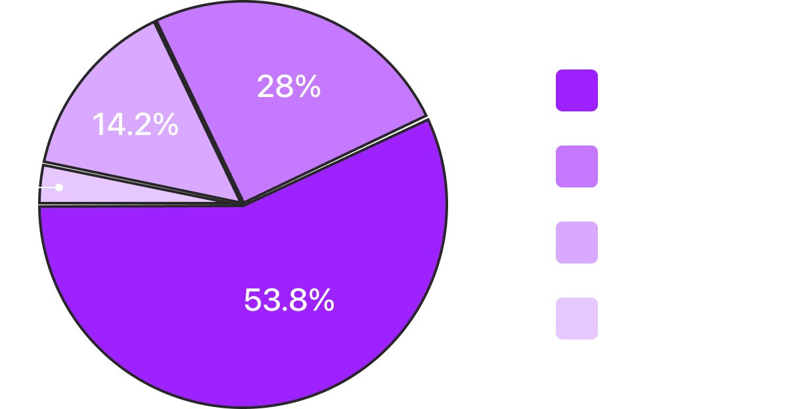
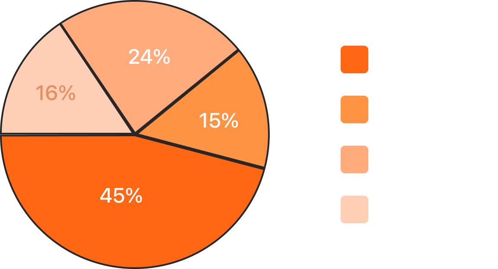
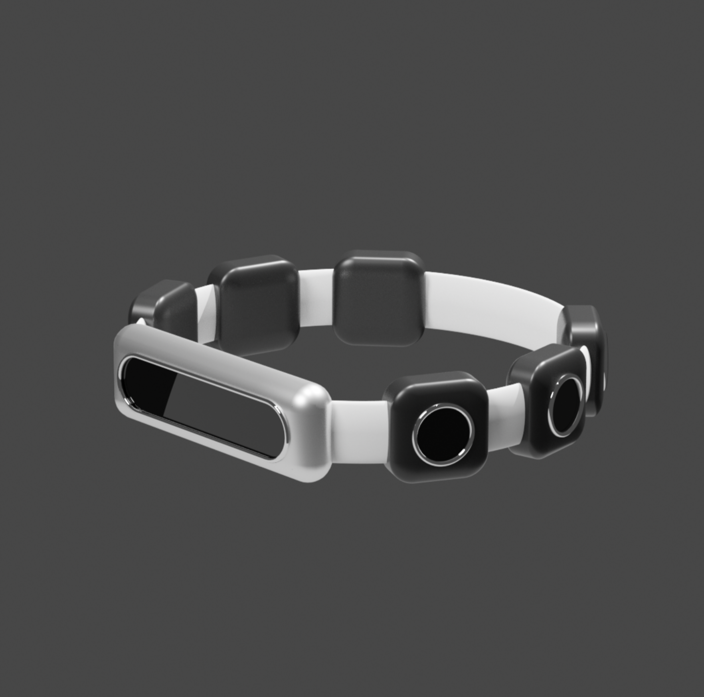
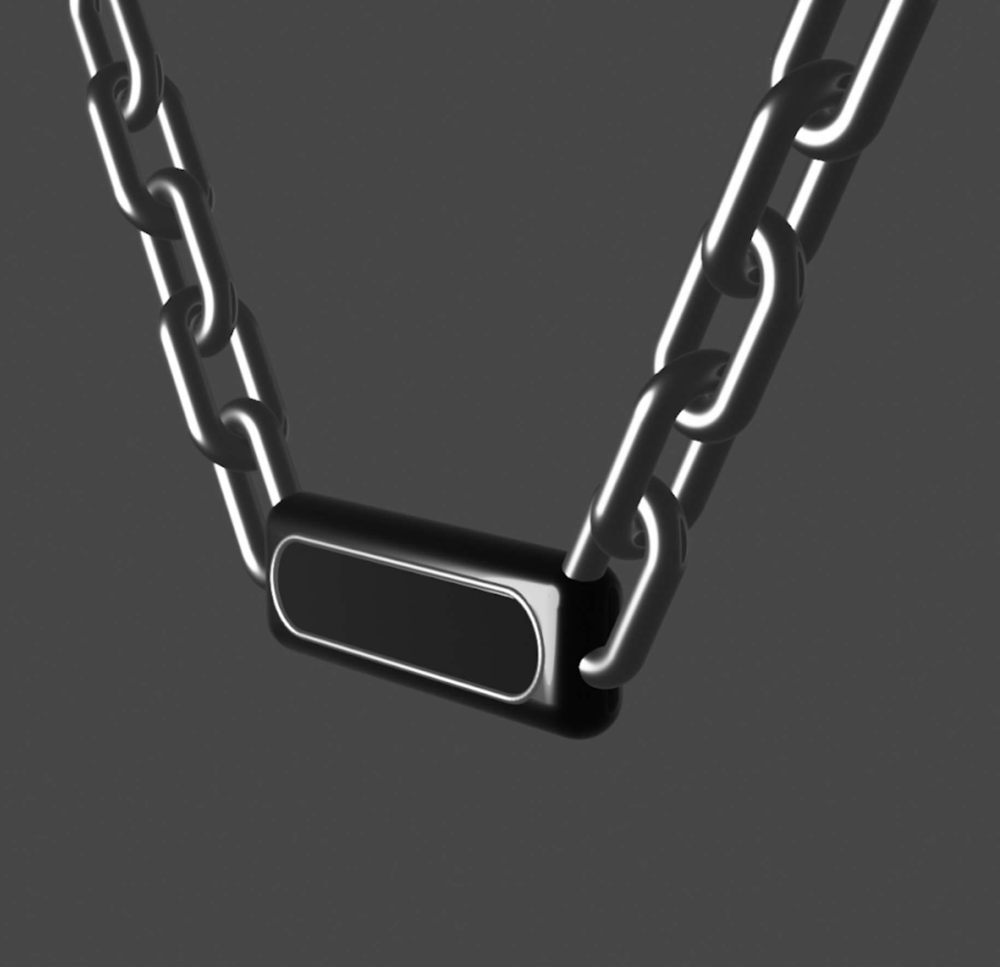

tackling the fear of speaking in front of a large group/crowd, a
common form of anxiety. It has an affect ranging from slight
nervousness to paralyzing fear and panic.
#1
primary research
we conducted an initial survey with a diverse group of around 100
people.
background
age

occupation

response
problems they face in other people’s speech
problems they feel in their own speech

response
frequency of these problems
others

self

#2
low-fidelity prototype
next, we ideated three different approaches and then discussed them
with our targeted users to evaluate their relevance
1. a speech training simulator using a VR device or a video
conferencing tool.
2. live feedback & input using a smart wearable
a speech training simulator
We could approach this in two ways:
1. A virtual reality app to simulate crowd and allow for different
settings(locations). The user will have the ability to modify
crowd’s noise and other factors along with other disturbances. It
could also provides a summary of speech along with accuracy and pain
points upon completion.
2. Given the rise in virtual meetings and conferences, integrating a
speech training emulator in a video conferencing tool with all the
features mentioned above (participant size, background disturbance,
etc.) while simultaneously providing insights of the speech could
make up a well-rounded learning & practice system.
a smart wearable for live feedback & input
A smart wearable bracelet/pendant, housing multiple directional
microphones can be used to actively listen to users’
conversations.Tactile feedback can be additionally used to provide
non-visual feedback to the user as necessary. Detailed and results
can be provided using a mobile application.


insights
Some in-depth interviews were conducted to evaluate these ideas. We
got the following insights:
Practicing using a video-conferencing tool could be pretty effective
specifically for those not accustomed to using those tools. Whereas
some had concerns regarding whether if it would be able to replicate
a real-time situation. But overall, we got a positive response
regarding the speech training simulator, in particular, they felt
that the video conferencing one was more useful while VR approach
seemed exciting and fun to try.
For the wearable one, the general consensus was that a wearable
might make them conscious and hence, disrupt the natural flow of the
conversation. Some had concerns regarding their appearance and the
fact it had to look gender neutral for them to wear it at all times.
Whereas some felt that their wrist was already full with their watch
and wouldn’t want to wear an additional device. Plus, due to the all
those sensors, the necklace could be heavy and look weird. On top of
all this, most of the interviewees also felt uncomfortable knowing
the fact that the device would be hearing them all the fault and had
privacy concerns.
Based on these insights, we decided to go forward with designing a
speech training simulator.
designing the first prototype
identifying possible features
1. words per minute
2. sentiment analysis
3. recognising a certain category of words
4. variable crowd size & volume
5. multiple environments
words per minute
through our research, we found that words spoken per minute plays an
intergral part in the outcome of speech. So, we integrated an
odometer with a range of 1 to 300. Our research shows that the range
is b/w 1 to 300, with 160 being the maximum someone is comfortable
hearing. The ideal range would be 140-160 as it would convey the
information efficiently without any problems.
sentiment analysis
sentiment also plays a crucial in how your words are interpreted, we
found a google api that analyses the sentiment of the speech and
used an odometer to depict it. we used emojis 😡 & 😃 have been used
at the ends of the odometer for fun & easy recognition.
variable crowd size and volume
different types of audiences and their behaviour has the capacity to
dictate the outcome of various speeches. Hence, the option to switch
between variable crowd sizes and crowd volumes would allow the user
to test themselves in a variety of conditions and situations to
provides a comprehensive experience.
designing the screens
minimum viable prototype
insights from the first users
we invited three participants to test our minimum viable prototype
and provide insights based on their preliminary experience.
!
I will soon be adding more screens, how it can be translated to virtual
meetings/conferences and further insights soon; apologies for the
inconvenience.